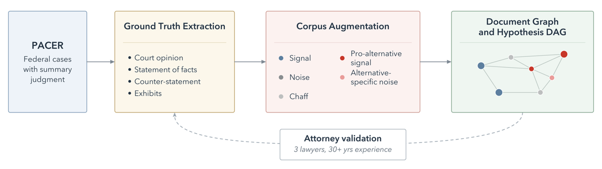
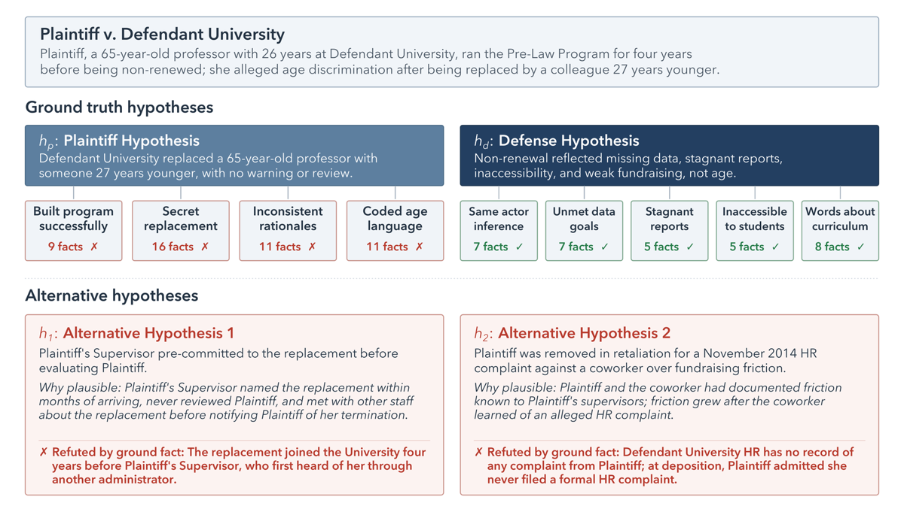
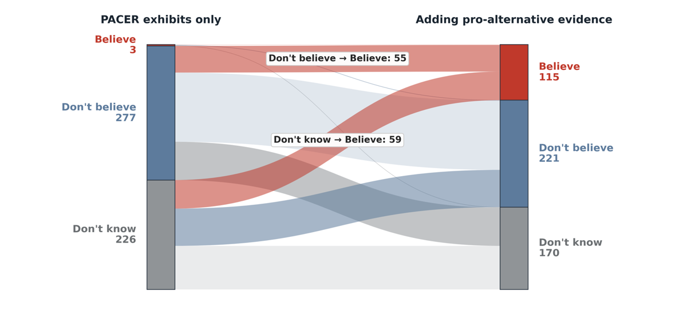

TL;DR — Environnement agentique juridique multi-documents où la vérité terrain n'est ni un test unitaire ni une rubrique, mais l'hypothèse factuelle adoptée par un juge fédéral dans une décision de summary judgment récupérée sur PACER ; le record réel est noyé dans des centaines de documents synthétiques typés par rôle probatoire, dont des distracteurs « pro-alternative » conçus pour soutenir des lectures factuelles cohérentes mais fausses.
Claim principal — Sur 100 cas, le meilleur agent frontier ne résout que 33,3 % des cas (Haiku 4.5), contre 9,9 % pour une politique de verdicts uniformément aléatoire et 25,0 % pour une politique « croire une hypothèse au hasard, rejeter les autres » ; les gains sur cette seconde baseline (+8,3 pts Haiku, +4,9 pts Sonnet) ne sont pas statistiquement significatifs [§4.1]. Claim secondaire, le plus intéressant : ajouter 20 documents pro-alternative fait passer la croyance en une hypothèse réfutée de 3/506 (0,6 %) à 115/506 (22,7 %) des verdicts [Fig. 6].
Pour le lecteur RL : pas une ligne de RL dans ce papier. Mais c'est le reward juridique vérifiable programmatiquement le plus crédible publié à ce jour, et le papier livre le pipeline, les prompts et les 100 records.
Humaines et institutionnelles, puis augmentées par modèle. La tâche vient d'un artefact réel du contentieux civil fédéral US : la motion for summary judgment (MSJ). Les deux parties doivent énumérer chaque fait matériel invoqué, y attacher une pièce probatoire, et accepter ou contester un à un les faits de l'adversaire ; le juge rend une opinion écrite qui adopte un jeu de constatations factuelles traçables aux pièces du dossier [§1]. D'où : corpus probatoire complet + hypothèse adoptée par la cour, « judicially validated ground truth » (les auteurs) [§1].
expert_report sont aussi interdits à la génération [App. D.2, _doctype_styles.j2].ground_facts.j2]. Le prompt impose de réécrire tout vocabulaire juridique en prédicat observable (table d'exemples : « failed to establish the retail-service exemption » → « produced no payroll records… »). Test donné au modèle : « un profane pourrait-il vérifier ce fait en lisant un document ? ».granted | denied | granted_in_part, le movant, et par sous-claim accepted | rejected | not_reached [App. D.1, judge_ruling.j2].alt_fact_dag.j2] : ≥3 ground facts réutilisés ; faits nouveaux injectés (pas de réinterprétation des faits existants) ; réfutabilité obligatoire (≥1 réfuteur, ground ou injecté) ; additivité (les faits pro-alt ne contredisent aucun ground fact — self-check + grader aval) ; non-juridicité ; diversité entre les 2 alts ; anti-pattern explicite « ne pas relitiger un fait déjà documenté, inventer une transaction/période/tiers nouveau ».pattern, un plan de 3 à 5 documents dont chacun ne porte qu'un éclat (une date, une entité, un fragment d'événement), le fait n'étant récupérable que par synthèse ; anti-pattern et self-check explicites contre les shards auto-suffisants [App. D.2, shard_plan.j2].Les 5 rôles probatoires [Tab. 1] : signal (porte ≥1 ground fact), noise (mêmes parties/contrats/fenêtres de dates, aucun ground fact), chaff (même monde business, aucune partie/date/sujet du litige — encombrement administratif), pro-alternative signal (porte un fait qui penche vers une alternative tout en restant individuellement compatible avec chaque ground fact), alternative-specific noise (couverture topique de l'alternative, sans ses faits).
Aucun filtrage par pass@k ni par capacité d'un modèle de base. Le filtrage est (i) juridique (MSJ décidée, non scellée, dossier factuellement disputé — pré-screening par un avocat avant génération [§2.4]), (ii) de scoping (merits only, exclusion des pièces qui donnent la réponse [§2.1]), (iii) de qualité de génération (judge Haiku, 3 tentatives max [§2.3]), (iv) un « Phase 3 quality filter » évoqué uniquement dans le prompt judge_ruling.j2 pour les opinions sans motivation écrite [App. D.1] — jamais décrit dans le corps du papier, seuils non précisés.
Aucun — pas d'entraînement, donc pas d'ordre ni de rééchantillonnage. Mais l'ablation cumulative à 5 niveaux (§4.2) est un curriculum de difficulté prêt à l'emploi, avec le knob exact (nombre de documents par rôle).
anderson_v_whole_foods_market_inc, …). Un modèle peut avoir mémorisé le dispositif de ces cas précis. La seule parade est une instruction de prompt (« Do not look online for any outside information », [App. D.4]), c'est-à-dire aucune parade mesurée. Atténuation : les scores observés sont bas, donc la contamination ne fabrique pas le constat d'échec — mais elle pollue le classement des modèles et l'ablation.Sans objet (aucun entraînement).
Turn 1 : type de matière (case_type) + chemin d'un répertoire sur disque local contenant le corpus de documents ; l'agent voit ce qu'il décide d'ouvrir [§3.1, App. D.4]. Les documents sont des PDF rendus (plus docx/xlsx/pptx/txt pour les synthétiques) [§2.3] — donc lecture de documents, pas de texte pré-parsé : composante multimodale/parsing de facto. Turn 2 : l'agent ne voit que son propre résumé de Turn 1 plus la liste mélangée des hypothèses H1, H2, … [§3.1].
Quatre opérations de système de fichiers, identiques côté Anthropic et OpenAI [§3.2] :
- Claude Agent SDK, outils natifs Read, Bash, Glob, Grep ; buffer max 10 MB [App. A].
- OpenAI Agents SDK, function tools read_file, glob_files, grep_files, bash ; truncation="auto" [App. A].
- DeepSeek V4 Flash et Qwen 3.6 35B : harness mini-swe-agent sur vLLM, endpoints OpenAI-compatibles [§3.2].
Signatures exactes des outils : non précisées (le papier donne les noms, pas les schémas d'arguments).
MaxTurnsExceeded sur 75 % des cas, 30 appels d'outils des deux côtés [App. A]. Signal utile : le scaffold OpenAI consomme 2× plus de tours pour la même tâche.truncation="auto", buffer 10 MB) [App. A]. Le résumé de Turn 1 est le seul état transmis — c'est un goulot d'étranglement assumé et instrumenté (« make your summary self-contained », [App. D.4]).bash) ou une comptabilité des appels différente de celle annoncée. Le papier ne le dit pas.Pas de sandbox conteneurisée décrite : corpus sur disque local, « no specialized storage required beyond the case corpus on local disk » [App. A]. Modèles frontier via API Anthropic/OpenAI depuis un hôte Linux d'orchestration ; open-weight servis par vLLM local sur GPU NVIDIA [App. A]. Déterminisme : non précisé (température, top-p, seeds : non précisés). Reset : implicite (corpus statique en lecture seule, les hypothèses de Turn 2 sont mélangées [§3.1]). Timeouts : aucun timeout wall-clock au-delà des limites du SDK et du budget d'outils, sauf une limite de 2 h dans l'ablation étendue à 50 cas [App. A].
{"label","verdict","reason"}, « no prose, no code fences » [App. D.4].Le papier ne donne aucune trajectoire. Il donne en revanche les prompts intégraux des deux tours [App. D.4], recopiés ici car ils constituent l'interface de l'environnement :
Turn 1 (investigate.j2) :
You are presented a corpus where a {{ case_type }} matter has happened. / The documents are located in: {{ exhibits_path }} / Please investigate and come up with a solid understanding of what has happened as well as any other possible scenarios the evidence could support. The goal is to be complete in your understanding of what had happened and the possibilities (with cited documents for each possibility). / Do not look online for any outside information. Only rely on the documents in {{ exhibits_path }}. / When you are done investigating, write a thorough summary of: 1. The most likely account of what happened, with citations to specific documents. 2. Any alternative scenarios that the evidence could also support, with citations. 3. Any evidence that appears inconsistent with the most likely account. / Take as long as you need. You will be asked follow-up questions after this summary; you will not be able to re-read documents at that point, so make your summary self-contained.
Turn 2 (verdict.j2) :
Now that you've conducted your investigation, please answer the following questions on your beliefs about each hypothesis. For each, choose exactly one of: A. Believe / B. Don't believe / C. Don't know / The hypotheses: … / Rely only on what you learned during your investigation. You cannot search the documents again. / Respond with ONLY a JSON array — no prose, no code fences — with one object per hypothesis in the same order as above.
⚠️ Noter ce que le prompt de Turn 1 ne dit pas : il ne mentionne jamais qu'un menu d'hypothèses suivra, ni qu'une seule sera correcte, ni qu'il faudra trancher. L'agent optimise « être complet » puis est noté sur « avoir tranché juste » — une partie de l'écart Haiku/Sonnet (§4.1) est probablement imputable à ce désalignement entre consigne et métrique, pas à une différence de capacité d'investigation.
Hybride institutionnel + programmatique. La vérité terrain est extraite par LLM de l'opinion du juge, auditée par avocats, puis le scoring est un exact match programmatique sur 4 verdicts catégoriels — aucun juge LLM dans la boucle de scoring de la tâche principale [§3.1]. (Un juge LLM rubriqué existe pour le harness factual-QA secondaire [App. D.3], dont aucun résultat n'est rapporté.)
Chaîne complète : opinion du juge → extraction LLM de la disposition et des rulings par sous-claim (granted | denied | granted_in_part, accepted | rejected | not_reached) [App. D.1] → le camp dont le claim global est accepté reçoit judge_ruling: "accepted", l'autre "rejected", les deux "split" si ruling partagé [App. D.1] → h := l'hypothèse de partie adoptée, h† := l'autre, et le reward est : believe pour h, do not believe pour h†, h₁, h₂ [§3.1].
Ce que ça garantit : (i) l'hypothèse de référence a été adoptée par un décideur institutionnel contraint d'écrire sa motivation et de rattacher chaque constatation aux pièces du dossier [§1] ; (ii) le dossier probatoire fourni à l'agent est le même que celui dont le juge disposait, modulo le scoping des merits exhibits [§2.1] ; (iii) la résolubilité depuis les merits exhibits seuls a été testée en aveugle sur 10 cas, 10/10 [§2.4] ; (iv) la fidélité de l'extraction des deux hypothèses de partie a été auditée sur les 100 cas et passe à 98,0 % sur 150 items [§2.4, Tab. 2].
Ce que ça ne garantit pas — le point dur, et le papier n'en traite qu'une partie :
1. Le summary judgment ne tranche pas le fond. Les auteurs sont honnêtes dans la formulation (« treated as ground truth for the purposes of deciding the motion », abstract) mais exploitent ensuite le label comme s'il s'agissait de ce qui s'est réellement passé (« the court-adopted hypothesis », « the most likely account of what happened »). Sous FRCP 56, le juge ne pèse pas la crédibilité et lit le dossier au bénéfice du non-movant : une MSJ accordée signifie « aucun jury raisonnable ne pourrait conclure autrement », pas « ces faits sont vrais ».
2. Le cas d'une MSJ rejetée est pire encore : rejeter la motion signifie précisément que les faits sont genuinement disputés — il n'y a alors aucune hypothèse factuelle adoptée par la cour au sens fort, et étiqueter le récit du non-movant comme « court-adopted » confond « survit au summary judgment » et « vrai ». Le pipeline gère denied et granted_in_part [App. D.1], mais la distribution granted / denied / granted_in_part sur les 100 cas n'est pas précisée, et le traitement des rulings split dans le scoring n'est pas précisé alors que h est défini comme un élément unique de {h_p, h_d} [§3.1]. C'est le trou de conception le plus important du papier.
3. La cour peut se tromper, et le label ne porte aucune trace d'appel ou d'infirmation : filtrage par historique d'appel non précisé.
4. Le label est factuel par construction, pas juridique : la table de faits canonique réécrit explicitement tout vocabulaire juridique en prédicat observable [App. D.1]. L'environnement teste donc la reconstruction factuelle à partir de preuves, pas le raisonnement juridique, pas la qualification, pas la citation d'autorités. À garder en tête avant de le présenter comme un proxy de Harvey LAB.
5. Chaîne LLM en amont du label : la disposition est lue par un LLM, pas par un parseur de docket. Audit avocat à 98,0 % de pass sur l'extraction des hypothèses de partie, mais le taux d'erreur de l'annotation du ruling lui-même n'est pas rapporté séparément*.
case-solved = 1 ssi le modèle croit h et rejette les 3 autres ; un do not know* sur une alternative compte comme un rejet [§3.1].Aucun : pas de bonus de format, pas de pénalité de longueur, pas de récompense de citation — alors même que le prompt de Turn 1 exige des citations de documents [App. D.4]. Les citations ne sont jamais vérifiées ni notées. ⚠️ C'est l'angle mort le plus coûteux pour un usage juridique.
Mesurée, et c'est le point fort du papier [§2.4, Tab. 2] :
| Stage | Cas | Items | Pass % | Borderline % | Fail % | % accord |
|---|---|---|---|---|---|---|
| Party hypotheses | 55 | 150 | 98,0 | 0,0 | 2,0 | 93,3 |
| Alternative hypotheses | 55 | 308 | 96,4 | 0,0 | 3,6 | 92,1 |
| Chaff | 55 | 225 | 94,7 | 3,6 | 1,8 | 81,1 |
| Document metadata | 45 | 1 326 | 73,7 | 15,8 | 10,5 | 72,6 |
| Tous stages (pooled) | 55 | 2 009 | 81,3 | 10,9 | 7,8 | 78,2 |
Accord inter-annotateurs calculé sur le sous-ensemble de 10 cas notés par les 3 avocats [Tab. 2]. Faux positifs / faux négatifs du scoring lui-même : sans objet (scoring déterministe). Mais : ⚠️ §2.4 annonce une revue stage-by-stage couvrant « party hypotheses, alternative hypotheses, signal/noise documents, chaff, and document metadata », et la Tab. 2 ne contient aucune ligne signal / noise / pro-alternative — les documents les plus porteurs du signal n'ont pas de taux de pass rapporté (les 150 et 308 items sont des items d'hypothèse, soit ~2,7 et ~5,6 par cas, pas des documents). Introuvable.
Deux juges LLM dans le système, aucun dans le scoring principal :
- Judge de génération (Claude Haiku 4.5) : relit chaque document synthétique contre sa spec, 3 régénérations max [§2.3]. Prompt : non reproduit tel quel ; les garde-fous sont dans le prompt de génération (« The post-generation grading pass will read this document alone and ask "does it assert/refute the proposition?" — make the answer a clear yes », [App. D.2]). Les prompts grounding_grader.j2 et additivity_check.j2 existent dans le dépôt publié mais ne sont pas reproduits dans l'annexe.
- Rubric judge du harness factual-QA (Claude Sonnet) : booléens par item de rubrique, prompt intégral en [App. D.3] — « Respond with ONLY a JSON array of booleans, one per rubric item ». Non validé contre des humains ; aucun résultat factual-QA n'est rapporté dans le papier.
case-solved apprendrait d'abord cette politique de commitment sans investiguer. Traité en §9.Aucune. Pas de RL, pas de SFT, pas de DPO : les six modèles sont évalués tels quels via API ou vLLM [§3.2]. Algorithme, KL, advantage, clipping, batch, LR, steps : sans objet. Température, top-p et seeds de sampling : non précisés — omission qui pèse, puisque tous les résultats reposent sur un unique rollout par (modèle, cas).
Ce que le papier apporte quand même à l'optimisation : - Un reward vérifiable, binaire, calculable hors-ligne, sur une tâche juridique réaliste. - Un taux de succès de 14–33 % selon le modèle [Fig. 4] : bande de difficulté correcte pour du RLVR (ni saturé, ni nul) sur les modèles de taille moyenne. - Un knob de difficulté continu et causalement validé (nombre de documents pro-alternative) [§4.2]. - Un signal dense disponible gratuitement (signal recall par trajectoire) dont le papier montre qu'il ne prédit pas l'accuracy [§4.3] — information négative précieuse pour la conception d'un process reward.
MaxTurnsExceeded du harness OpenAI sur 75 % des cas à 25 tours [App. A].case-solved comme reward RL.costs.json est effectivement présent dans chaque archive de cas publiée.| Chiffre annoncé | Où il est annoncé | Source dans le papier | Verdict |
|---|---|---|---|
| « court-adopted hypothesis … treated as ground truth for the purposes of deciding the motion » | Abstract | §1, §1.1 ; mécanique en [App. D.1 judge_ruling.j2] |
confirmé comme construction. Mais la suite du papier parle de « the most likely account of what happened » [App. D.4] : glissement non argumenté entre « adopté pour trancher la motion » et « vrai » (voir §3) |
| « attorney-validated generation pipeline » | Abstract, §1 | §2.4, Tab. 2 | sur-généralisé : audit de fidélité des hypothèses sur 100/100 cas, mais revue stage-by-stage sur 55/100 seulement, document metadata sur 45 cas à 73,7 % de pass, et aucun taux de pass rapporté pour les documents signal / noise / pro-alternative pourtant annoncés comme revus [§2.4] |
| « pass rates exceeded 94% » | §2.4 | Tab. 2 : 98,0 / 96,4 / 94,7 | confirmé pour 3 stages sur 4 ; le pooled pass est 81,3 % (tiré vers le bas par document metadata à 73,7 %) — l'annexe B le dit explicitement, pas §2.4 |
| « 81%+ agreement score » | §2.4 | Tab. 2 : 93,3 / 92,1 / 81,1 ; pooled 78,2 | confirmé sur les 3 stages critiques ; pooled 78,2 % < 81 % |
| « Evaluating on 100 cases » | Abstract ; Fig. 4 « Performance on the 100-case cohort » | §4.1 : analyse Sonnet/Haiku sur 87 cas à sorties complètes ; Fig. 6 : 94/600 paires écartées | contredit / dénominateurs non précisés. Fig. 4 donne Sonnet 29,9 % alors que §4.1 donne Sonnet 25/87 = 28,7 % ; 29,9 % n'est pas exprimable sur 100 ni sur 87 avec 25 succès. Les taux de la Fig. 4 sont donc calculés sur des dénominateurs par modèle (runs complets, < 100) jamais explicités |
| Haiku 4.5 = 33,3 %, Sonnet 4.6 = 29,9 %, GPT-5.5 = 23,3 %, GPT-5.4-mini = 15,8 %, DeepSeek v4 = 16,5 %, Qwen 3.6 35B = 14,3 % | §4.1 (les deux premiers) | Fig. 4 (gauche) | confirmé (valeurs lues sur la figure), sous réserve du dénominateur ci-dessus |
| « The best-performing model solves only one-third of cases » | §4.1 (titre de paragraphe) | Fig. 4 : 33,3 % | confirmé |
| « only these two exceed the stronger baseline (25,0 %) … gains 8,3 et 4,9 pts ; neither improvement is statistically significant » | §4.1 | Fig. 4 + test non détaillé | confirmé et à retenir : le résultat phare n'est pas significatif. Test utilisé : non précisé |
| « Five of the six models achieve 41,9–52,6 % accuracy on their worse-performing class » | §4.1 | Fig. 4 (centre, droite) : worst-class par modèle = 52,6 / 51,7 / 45,6 / 20,0 / 41,9 / 47,3 | confirmé arithmétiquement |
| « Haiku commits on 80,7 % of verdicts vs 73,3 % for Sonnet ; 74,1 % vs 70,8 % conditional accuracy ; 29/87 vs 25/87 » | §4.1 | §4.1 uniquement, aucun tableau | introuvable ailleurs : aucun tableau ni figure ne reprend ces chiffres, impossible de recouper |
| « declines range from 4 to 22 percentage points » (ajout de pro-alt) | §4.2 | Fig. 5 : Sonnet −4, Haiku −22, DeepSeek −16, Qwen −10, GPT-5.4-mini −8, GPT-5.5 +2 | confirmé |
| « paired 95 % bootstrap CIs exclude zero for Haiku (−22) and GPT-5.4-mini (−8) » | §4.2 | Fig. 5 | confirmé tel qu'énoncé, mais ⚠️ incohérent en apparence : DeepSeek chute de 16 pts sans être significatif tandis que GPT-5.4-mini l'est à 8 pts. Aucune CI n'est affichée sur la figure, impossible de vérifier |
| « belief in these reference-incorrect alternatives increases from 3/506 (0,6 %) to 115/506 (22,7 %) : 55 answers change from do not believe, 59 from do not know, and one remains believe » | §4.2, Fig. 6 | Fig. 6 : 3+277+226 = 506 à gauche ; 115+221+170 = 506 à droite ; 55+59+1 = 115 | confirmé, totaux cohérents |
| « agents open 0,7–10 % of the corpus … Sonnet (7,4 %, 24,7 %), DeepSeek (10,0 %, 24,2 %), GPT-5.4-mini (0,7 %, 3,1 %) » | §4.3 | Fig. 7 | confirmé |
| « none of these strategy differences predict accuracy » | §4.3 | Fig. 7 (6 points) | sur-généralisé : aucune statistique n'est rapportée (coefficient, p-value, régression intra-modèle par cas : non précisé). Null result sur 6 points agrégés par modèle |
| « agents often commit to incorrect hypotheses despite retrieving relevant evidence » | Abstract | §4.1 (16/45 et 21/46 cas) + §4.3 (signal recall 15–24,7 %) | sur-généralisé sur la seconde moitié : le signal recall plafonne à 24,7 %, les agents ne retrouvent qu'un quart des documents porteurs. Vrai relativement à la récupération uniforme, faux en absolu |
| « evaluator rankings remain consistent up to ties across generator conditions (Spearman ρ = 0,94) » | §4.4 | Fig. 8 | confirmé : aucune inversion stricte entre les deux conditions. ⚠️ Mais sur ces 30 cas held-out en condition Anthropic, Sonnet 33,3 % > Haiku 23,3 % — soit l'inverse du classement phare des 100 cas. Le classement « Haiku > Sonnet » ne réplique pas sur le held-out, et le papier ne le relève pas |
| « DeepSeek v4 : 10,0 % → 26,7 %, +16,7 pts, 95 % CI [0,0 ; 33,3] » | §4.4 | Fig. 8 | confirmé ; CI dont la borne basse touche zéro |
| « We release the full PACER document corpus for all 100 cases » | §1 | — | confirmé hors papier : 100 archives case_archives/*.tar.zst sur le dépôt HuggingFace, ~2 Go, licence CC-BY-4.0 |
| « (ii) a portion of the generated synthetic documents (anonymized) » | §1 | — | confirmé, et minimal : les documents synthétiques d'un seul cas sur 100 (tiré au hasard) sont publiés ; les corpus réellement évalués ne le sont pas |
| « 42 283 pages … median 290, max 3 274 » | §2.1, Fig. 3c | Fig. 3c : histogramme à 11 classes sommant à 100 cas | confirmé (médiane cohérente : 51 cas sous 300 pages) |
Modèle opus dans le harness Claude |
App. A | — | introuvable : aucun résultat Opus n'est rapporté nulle part ; alias résiduel |
Verdict 7.0 : pas de contradiction grave, mais deux problèmes réels — les dénominateurs de la Fig. 4 ne sont ni 100 ni cohérents avec les comptes de §4.1, et les taux de validation des documents signal / pro-alternative, cœur du dispositif, ne sont pas rapportés.
| Modèle | Case-solved (100 cas) | Believe-class acc. | Do-not-believe-class acc. | Couverture corpus | Signal recall | Coût/cas |
|---|---|---|---|---|---|---|
| Claude Haiku 4.5 | 33,3 | 51,7 | 59,0 | ~6 % | ~16,5 % | non précisé |
| Claude Sonnet 4.6 | 29,9 | 52,6 | 54,6 | 7,4 % | 24,7 % | 2,06 $ |
| GPT-5.5 | 23,3 | 45,6 | 53,3 | ~3 % | ~19 % | non précisé |
| DeepSeek V4 Flash | 16,5 | 69,1 | 41,9 | 10,0 % | 24,2 % | GPU local |
| GPT-5.4-mini | 15,8 | 20,0 | 22,1 | 0,7 % | 3,1 % | 0,07 $ |
| Qwen 3.6 35B | 14,3 | 50,5 | 47,3 | ~5,7 % | ~15,5 % | GPU local |
| Baseline verdicts uniformes | 9,9 | 33,3 | 33,3 | — | — | — |
| Baseline « croire une au hasard » | 25,0 | non précisé | non précisé | — | — | — |
| Baseline « tout rejeter » | non précisé | 0 | 100 | — | — | — |
| Avocat expert, merits-only, 10 cas | 100 | — | — | — | — | 12 h / 459 p. |
Sources : Fig. 4 (case-solved, class acc.), Fig. 7 et §4.3 (couverture, recall), App. A (coûts), §4.1 (baselines), §2.4 (avocat).
Taille de modèle : non étudiée comme variable (6 modèles hétérogènes, 3 harness différents). Nombre de tâches : non étudié. Compute : non étudié — mais le budget d'outils (30 appels) est fixe alors que le corpus varie de 26,7 à 603,6 documents [Fig. 5], donc la difficulté par unité de budget augmente d'un facteur ~22 à travers l'ablation sans que le budget suive. Confound non discuté.
Verdict global : plausible mais fragile sur les chiffres, solide sur la construction. Le classement des modèles et l'écart aux baselines ne tiennent pas statistiquement (les auteurs le disent) et ne répliquent pas sur le held-out. En revanche l'effet causal des documents pro-alternative sur la croyance en une hypothèse réfutée (0,6 % → 22,7 %, apparié, 6 modèles, CI exclues de zéro sur 2 modèles) est le résultat à retenir, et la méthode de construction de la vérité terrain est, elle, solide et réutilisable. À répliquer sur le volet « classement », à réutiliser sur le volet « environnement ».

Ce qu'il faut voir : la vérité terrain n'est pas annotée, elle est récupérée — l'opinion du juge, les statements of facts et les pièces entrent à gauche et ressortent en h*/h†. La validation avocat (encadré du bas) est une boucle de contrôle sur deux étages du pipeline, pas une annotation de labels. Les cinq rôles probatoires sont le seul knob de difficulté de l'environnement.

Ce qu'il faut voir : la structure exacte du reward. Ici h = l'hypothèse de la défense (MSJ accordée au défendeur), avec 5 sous-claims acceptés contre 4 rejetés côté plaignant, chacun adossé à 5 à 16 ground facts. Et surtout le contrat de réfutabilité des alternatives : chaque alternative est accompagnée d'un « refuted by ground fact » explicite et citable (« HR has no record of any complaint ; at deposition, Plaintiff admitted she never filed a formal HR complaint »). C'est ce contrat — chaque distracteur a un réfuteur nommé dans le corpus — qui rend l'environnement notable sans juge LLM. À noter aussi la limite épistémique : sur ce cas, « court-adopted » signifie aucun jury raisonnable ne pourrait retenir la thèse du plaignant, pas la version du défendeur est vraie*.

Ce qu'il faut voir : le failure mode central, et le plus transférable. Sur un corpus limité aux pièces PACER, les agents rejettent correctement les alternatives (3 believe sur 506). Vingt documents pro-alternative suffisent à faire basculer 114 verdicts vers believe — dont 55 qui étaient des rejets francs. La vulnérabilité n'est donc pas l'incertitude (les do not know ne font que 59 des bascules) mais le renversement de conviction par preuve partielle cohérente. Un agent juridique entraîné sans ce type de distracteur sera invérifiablement crédule.
Figures non reprises ici mais utiles : fig_dataset_overview_2.png (Fig. 3, répartition des 100 cas et pages PACER), fig4_investigation_2.png (Fig. 4, résultat principal, chiffres tabulés en §7), fig6_ablations_1.png (Fig. 5, ablation de composition + tailles de corpus 26,7 → 603,6 docs/cas), fig5_trajectories_2.png (Fig. 7, couverture vs signal recall), fig8_generator_robustness_2.png (Fig. 8, robustesse au générateur).
C'est un papier déjà juridique : la question n'est pas « est-ce transférable » mais « que garder pour un env RL juridique, et que corriger ».
| Ingrédient | Choix du papier | Équivalent juridique (Gemini Law) | Transfert | Ce qui manque |
|---|---|---|---|---|
| Source des tâches | MSJ fédérales décidées, récupérées sur PACER, filtrées sur disponibilité du record complet [§2.1] | Identique, à volume supérieur : RECAP/CourtListener couvre des centaines de milliers de dockets ; extensible aux arbitrages, décisions administratives, juridictions d'État [§6] | direct | Volume (100 cas ≪ besoin RL) ; distribution granted/denied non précisée ; pas d'équivalent hors US (pas de PACER en France/UE, pas de SOUF en droit continental) |
| Vérité terrain | Hypothèse factuelle adoptée par la cour, extraite de l'opinion par LLM, auditée par 3 avocats (98,0 % pass sur 150 items) [§2.2, Tab. 2] | Tout artefact où une institution écrit sa motivation en rattachant chaque constatation à une pièce : décisions, sentences arbitrales, décisions administratives | adaptable | Le label ne porte que sur le fait, pas sur la qualification juridique (réécriture explicite du vocabulaire juridique [App. D.1]) ; ne vaut que « pour trancher la motion » ; split rulings non traités ; pas de filtre sur l'appel |
| Vérifieur | Exact match programmatique sur 4 verdicts catégoriels, zéro juge LLM dans le scoring [§3.1] | Réduire une question juridique ouverte à un menu d'hypothèses dont une seule est correcte : c'est la recette pour obtenir un reward vérifiable sans vérité exacte sur du texte long | direct, et c'est le point à retenir | Rien ne note l'argumentation ni les citations, alors que le prompt les exige [App. D.4] ; la métrique est hackable (25 % par commitment aveugle) ; « do not know » asymétrique |
| Harness / outils | 4 outils fichiers (Read/Bash/Glob/Grep), corpus de ~600 PDF sur disque local, 25 tours, 30 appels d'outils, Turn 2 sans outils [§3.2, App. A] |
Un data room de discovery monté comme un système de fichiers ; exactement la forme d'un dossier Harvey LAB | direct | Pas de sandbox ni de déterminisme décrits ; budget d'outils fixe alors que le corpus varie ×22 ; pas de mémoire/résumé géré par l'env ; signatures d'outils non publiées dans le papier |
| Algo | Aucun (évaluation pure) | GRPO/RLOO sur le reward case-solved + crédit partiel par hypothèse |
non (à construire) | Tout : hyperparamètres, variance, coût rollout (2,06 $/cas chez Sonnet est prohibitif en RL) |
| Curriculum | Ablation cumulative à 5 niveaux validée causalement (pro-alt = seul facteur) [§4.2] | Curriculum par nombre de documents pro-alternative, pas par taille de corpus | direct | La non-monotonie bruit/chaff (deux modèles s'améliorent) n'est pas expliquée — le knob « taille » n'est pas monotone |
| Anti-hacking | Turn 2 sans outils + hypothèses mélangées + contrat de réfutabilité + additivité des faits injectés + ablation de générateur [§3.1, §4.4, App. D.2] | Tous réutilisables tels quels | direct | Rien contre le commitment aveugle ; sorties non parsées exclues au lieu d'être punies ; aucune analyse de contamination |
Le couple « vérité terrain institutionnelle + commitment sans outils ». Le problème dur du juridique est l'absence de vérifieur exact sur des réponses longues et argumentées. Ce papier le contourne sans juge LLM : il laisse une institution produire le label (le juge, qui a écrit sa motivation et cité ses pièces), puis réduit la sortie de l'agent à un vecteur de verdicts sur un menu d'hypothèses que l'agent n'a pas vu pendant l'investigation. Le raisonnement reste long et libre en Turn 1 ; seule la commitment est notée, et elle est notable en exact match. C'est la recette la plus directement réutilisable que j'aie vue pour un reward juridique vérifiable.
Second ingrédient, sous-estimé : le contrat de réfutabilité imposé au générateur de distracteurs [App. D.2] — « chaque alternative doit avoir au moins un réfuteur, ground ou injecté », plus le self-check d'additivité (les faits pro-alt ne contredisent aucun ground fact). C'est ce qui empêche l'environnement d'être insoluble et ce qui rend le label défendable devant un avocat. Sans ce contrat, générer des distracteurs par LLM produit du bruit ambigu, pas un distracteur.
Setup : 500 à 1 000 MSJ fédérales accordées (on écarte denied et granted_in_part pour que h soit factuellement défendable), un seul issue par cas, labels produits par le pipeline publié ; k = 6 hypothèses par cas au lieu de 4, et surtout nombre variable d'hypothèses correctes par cas, tiré dans {0, 1, 2} — cela tue la politique « croire exactement une au hasard » (25 % devient ~1/3^k). Corpus par cas réduit à ~150 documents pour tenir le coût de rollout.
Entraînement : GRPO sur Gemini, reward = case-solved (binaire) + crédit partiel par hypothèse, + pénalité de format sur le JSON de Turn 2 (le papier exclut les non-parsés, nous devons les punir).
Mesures : (a) case-solved in-distribution ; (b) taux de commitment et accuracy conditionnelle, pour détecter le hack de commitment avant qu'il ne s'installe ; (c) transfert sur Vals Legal Research Bench et sur les tâches Harvey LAB adossées à des documents fournis ; (d) un holdout construit avec un générateur d'une autre famille, comme [§4.4].
Résultat attendu : gain net in-distribution (la bande 14–33 % laisse beaucoup de place) ; gain partiel sur les tâches Harvey LAB de synthèse multi-documents ; aucun gain sur les tâches de recherche juridique et de citation — l'environnement a délibérément expurgé le vocabulaire juridique de ses faits [App. D.1], il n'entraîne pas la qualification. Si on observe un gain sur Vals, suspecter d'abord une contamination ou un effet de format, pas une capacité.
Garde-fou* : avant tout entraînement, mesurer la contamination (scores sur les 100 cas publics avec corpus réduit aux merits exhibits vs cas post-cutoff) — le papier ne l'a pas fait et c'est le risque numéro un d'une reprise directe de la cohorte.